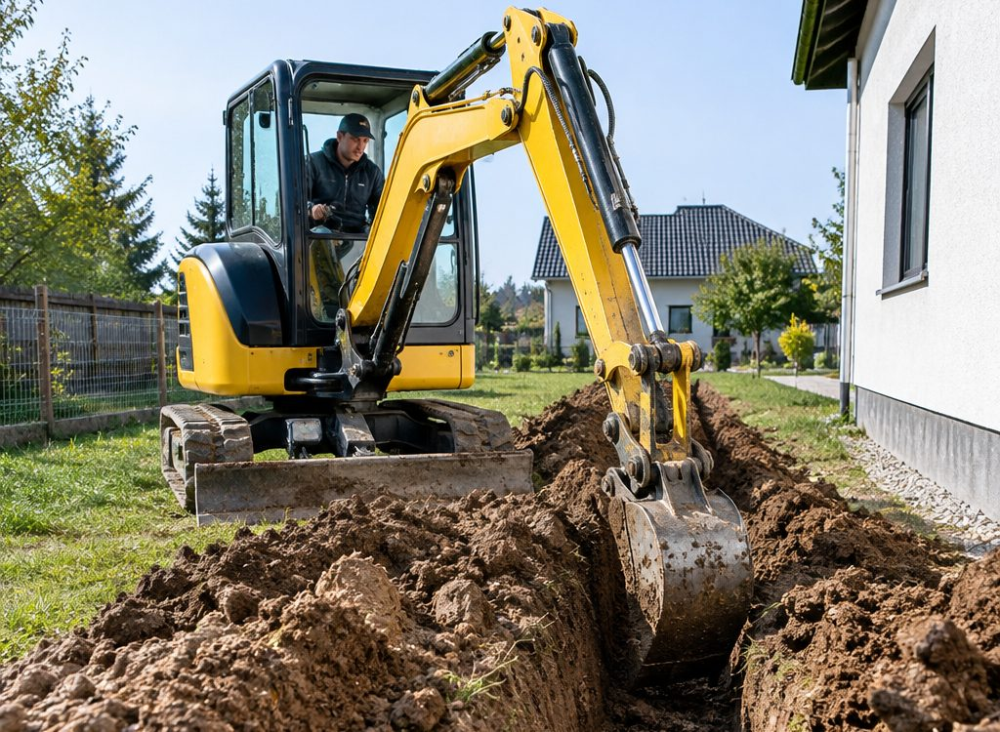
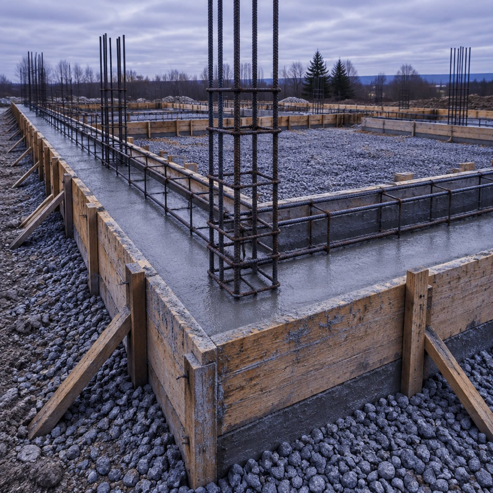

Расчёт · интерактив
Траншея в разрезе
Поставьте размеры: схема перестроится, а объём выемки посчитается сразу. Стрелки подскажут, сколько рейсов займёт вывоз грунта.
Задачи
Что копаем
Мини-экскаватор проходит там, где большая техника не развернётся, и не разбивает участок гусеницами.
Траншеи под коммуникации
Вода, канализация, электрика. Уклон в сторону колодца, ровное дно без камней.
Котлован под плиту
Снимаем грунт по площади дома, планируем дно под подушку, вывозим лишнее.
Септик и кессон
Котлован под ёмкость с запасом на обсыпку и доступ для установки.
Дренаж участка
Длинные линии с выдержанным уклоном, выпуск в колодец или на рельеф.
Планировка и корчевание
Выравниваем участок, убираем пни, готовим площадку под стройку.
Заезд и подъезд
Готовим подъезд для материалов и бетона: иначе миксер не зайдёт.

Связка с фундаментом
Своя техника —
свой график
Если фундамент и землю делает одна команда, не бывает классической паузы: «экскаватор обещали в четверг». Выкопали, поставили опалубку, залили — экскаватор приехал на следующий объект.
Грунт вывозим своим транспортом в тот же день. Не нужно отдельно искать самосвал и грузчиков.
Вопросы
Про экскаватор
Пройдёт ли техника на узкий участок
Мини-экскаватор как раз для этого: проезжает в калитку и работает между домом и забором. Ширину проезда уточните по телефону.
Копаете ли зимой
Зависит от промерзания грунта. В оттепель работаем, в сильный мороз — смотрим по участку.
Куда девать грунт
Можем вывезти своим транспортом или оставить на участке, если он нужен для подсыпки. Скажите заранее, что предпочитаете.
Считается ли время или объём
Считаем по задаче: объём выемки и условия подъезда. Форму объёма видно в калькуляторе выше.
Можно ли совместить с фундаментом
Да, это обычный порядок: копка, подушка, опалубка, заливка — одной командой.
Заявка
Вызвать экскаватор
Опишите участок и задачу — скажем, когда сможем выехать.
